The headache diary for iPhone. Logged in seconds.
iPhone with iOS 18 or later · Diary free · Grindweh Pro CHF 5, one-time
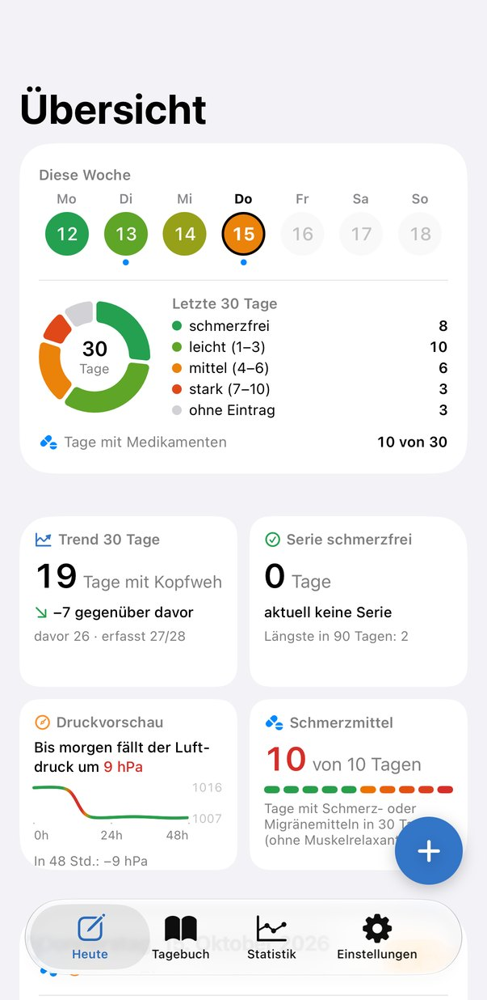
In Swiss German, your head is your «Grind» and pain is «Weh». So when your head hurts, you have «Grindweh».
Headaches have been part of my life for years, and the same question always remained: is it the weather, the tension, sport, sleep or last night’s glass of white wine? I couldn’t find a diary that gave me an answer. So I built one.
Morning, midday, evening: set your pain level, done. Forgot? Grindweh reminds you.
A 30-day look back. How many days in a row without a headache? How often painkillers? You see it at a glance.
With every entry the picture gets clearer and a pattern emerges. Grindweh shows you what is linked to your headaches.
One value from 0 to 10 per time of day, plus your medication. That’s all it takes. If you like, you can also track sleep, stress, caffeine, sport and anything else that might play a role.
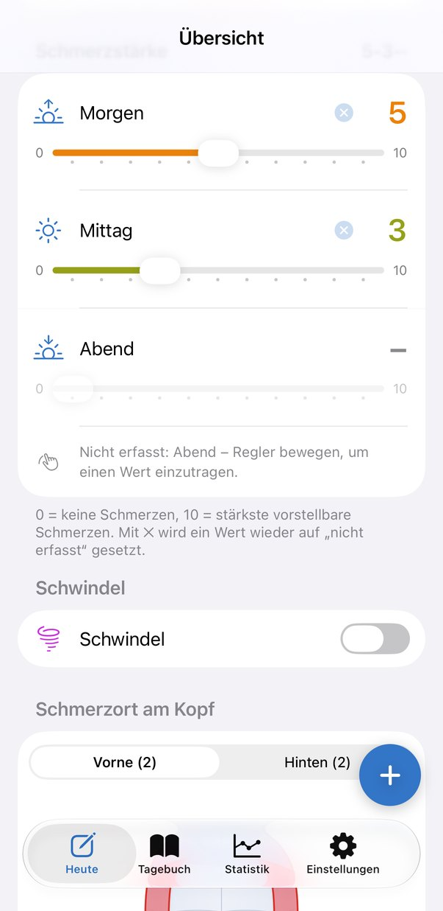
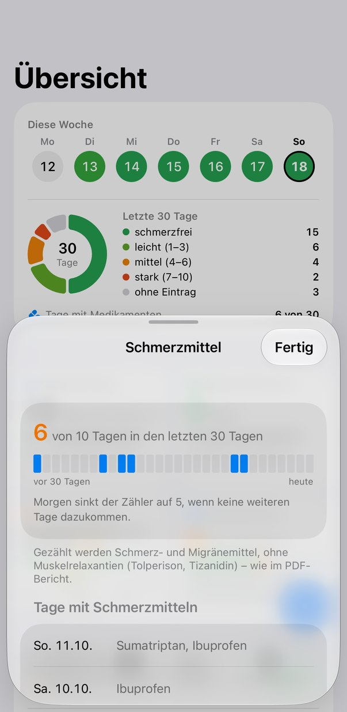
Tap the head graphic where it hurts and the body graphic where you feel tension: neck, shoulders, back. Grindweh remembers which zones keep coming up on headache days. In «Tension expert mode» you can even rate the intensity muscle by muscle.
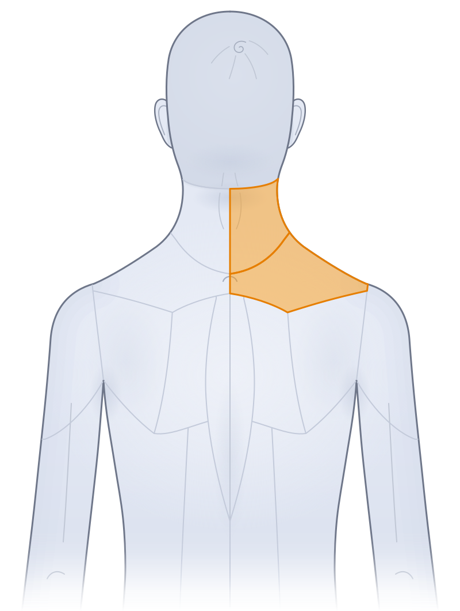
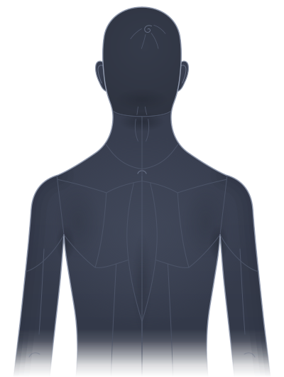
Does the air pressure drop before it starts? Does it mostly hit you on Mondays? After short nights? Patterns show you what stands out: pressure, tension, time of day, day of the week, sleep and workouts. Correlations, not causes. But a good starting point for your next conversation with your doctor or physio.
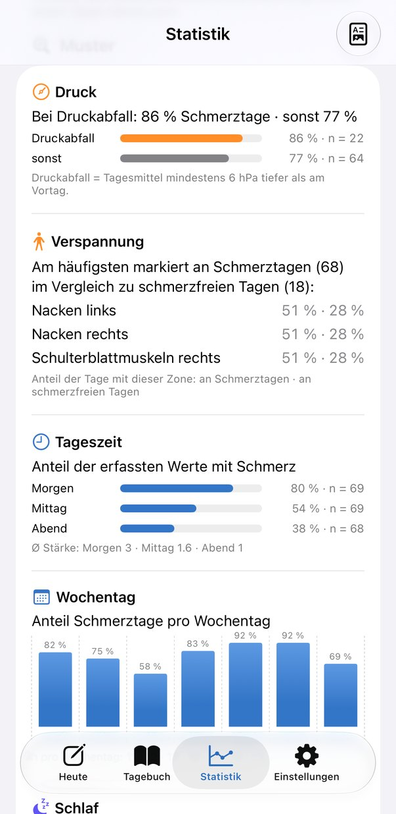
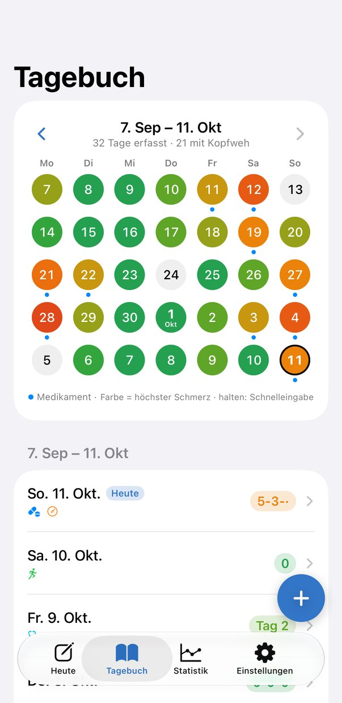
Taking painkillers on 10 or more days a month risks headaches caused by the medication itself. Grindweh keeps count and shows you where you stand.
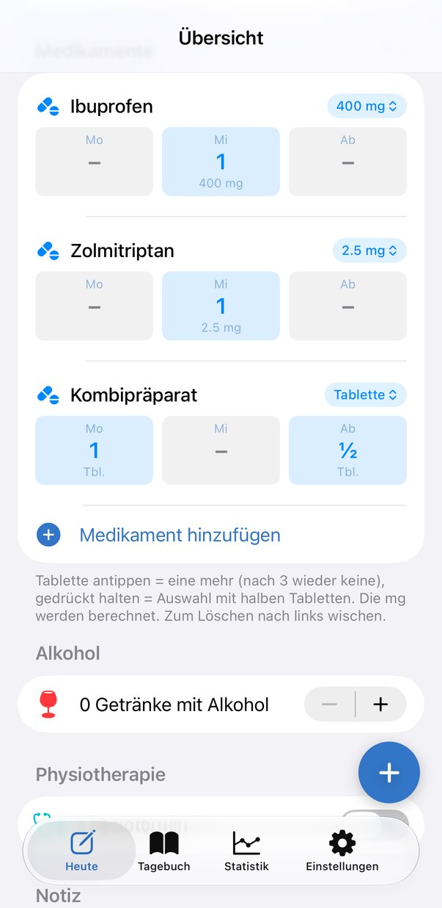
Grindweh adds weather and air pressure automatically. The pressure forecast warns you when the air pressure is dropping, often before the pain starts.
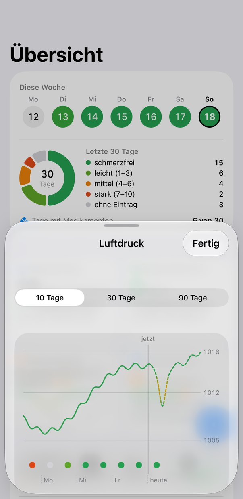
Connect Grindweh to Apple Health and sleep, steps, resting heart rate and workouts feed straight into your patterns. You authorise each data type individually.
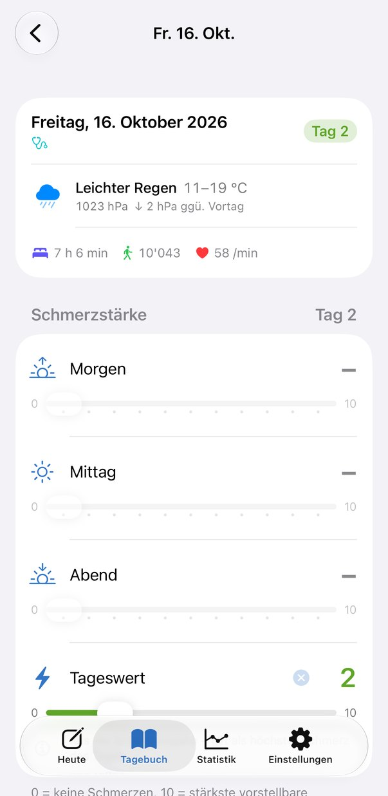
Don’t care about caffeine, but screen time matters? Switch each of the 15 areas on or off individually. Off just means hidden, nothing is lost. And anything missing, you add with custom fields.
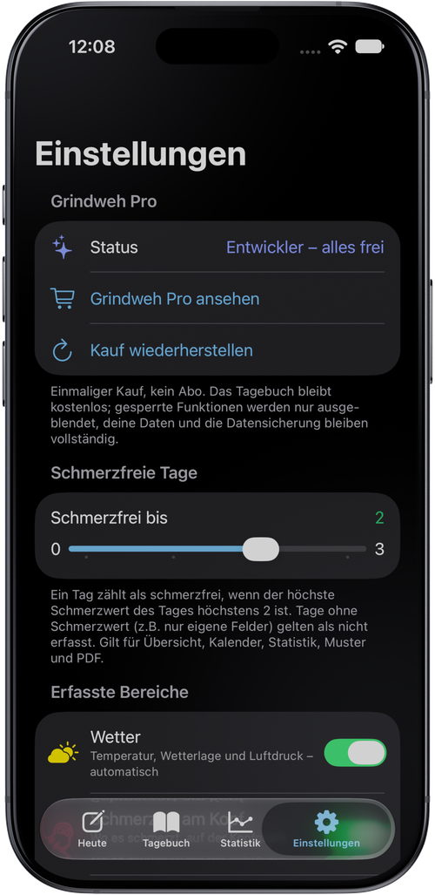
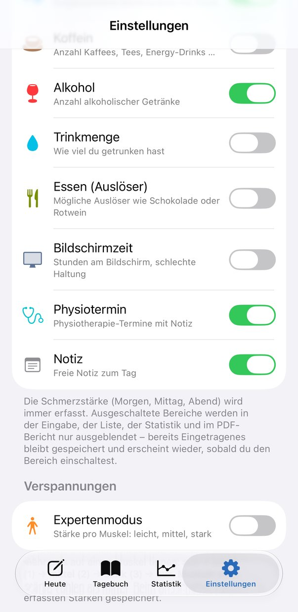
Your month on one A4 page, ready for your doctor’s surgery.
Your day and your week on the Home Screen.
Automatically every week, if you like, as a separate backup.
Optional via your private iCloud. You can turn it off in the app’s Settings – then the data stays on the iPhone only.
No account, no server of our own, no ads, no tracking. Health data is private. iCloud sync is optional and goes through your private iCloud, not through us. You can turn it off in the app’s Settings; then the data stays locally on the iPhone only – without changing your Apple Account. Export and the weekly backup remain separate features. Weather and air pressure come from Apple, and you only use Apple Health if you allow it.
The diary is free, with no expiry date. Grindweh Pro costs a one-time CHF 5 and comes with a free 14-day trial.
Pain level, medication, all areas, pain zones and tension zones, pain-free streak, painkillers, reminder, backup, 1 custom field.
Everything in Grindweh, plus patterns and statistics, PDF report, weather and air pressure, Apple Health, Tension expert mode, widget and unlimited custom fields.
After the trial, the Pro features are hidden. All your data is kept in full.
Soon. Grindweh is currently in testing. Sign up below and you’ll be the first to know.
No. Just install it and get started. For iCloud sync, use the same Apple ID signed into iCloud on your devices.
The diary carries on for free. The Pro features are paused until you buy Grindweh Pro. Nothing is lost.
No. Grindweh helps you keep track of your headaches and prepare well for appointments. Diagnosis and treatment remain a matter for professionals.
This website is available in German, French, Italian and English. The app launches in German.
No, Grindweh is made for iPhone.
Write to support@grindweh.app.